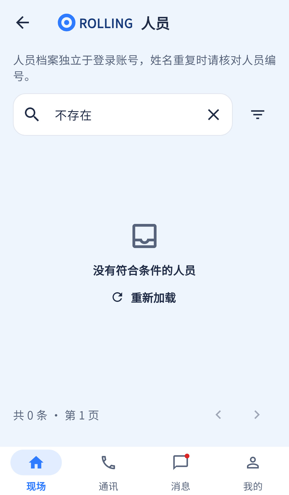

空态机制存在；应按原因提供不同动作，不能把有筛选的空列表描述为所有待办已处理。
相同 · 已有基础
无结果提示、刷新重试、页面仍能导航已有。
不同 · UI与场景
当前通用收纳盒图标+文字，无白卡大图；缺把业务无待办与筛选无结果分开的文案和一键清筛选。
01 / 先看 UI
两图显示宽度统一；设计390px与当前360逻辑宽的画布不同。各图可独立滚动到底，点击“原图”放大。


使用既有组件截图；业务数据为示例。
02 / 逐项核对功能与小交互
入口：现场人员 → 无匹配姓名 · 当前形态：状态
| 编号 | 部位 | 设计要求 | 当前UI | 功能结论 | 下一步 |
|---|---|---|---|---|---|
| 39-01 | 业务空态 | 当前没有待处理事件 | 当前列表多用“没有符合条件…” | 部分：有空态，原因未充分区分 | 仅无筛选且成功返回零待办时用业务清空文案 |
| 39-02 | 搜索空态 | 没有匹配结果、换关键词 | 当前人员无结果文案已有 | 已有代码 | 补建议说明，不误判接口失败 |
| 39-03 | 刷新 | 刷新列表 | 当前通用重新加载 | 已有代码：onRetry | 业务空态继续允许刷新 |
| 39-04 | 清除筛选 | 一键清条件 | 空态卡没有独立按钮，部分搜索框可清 | 缺失：统一清除所有筛选动作 | 增加清筛选回第一页，含状态、类型、人员、任务等 |
| 39-05 | 视觉 | 绿完成/蓝搜索图标和卡片 | 当前统一灰收纳图标 | UI缺口 | 拆业务完成/筛选无结果/无绑定等样式 |
| 39-06 | 组合画板 | 设计图同时展示两个空态 | 当前一次只显示实际状态 | 符合实际使用 | 不可把两张示意卡同时塞进生产页 |
| 39-07 | 导航 | 空列表仍能返回/切栏 | 当前保留 | 已有代码 | 验首屏到底和搜索恢复 |
| 39-08 | 无权限区别 | 图未独立画 | 当前403为暂无访问权限 | 已有额外状态 | 保留，不能改为“暂无数据” |
源码依据
ui.dart:123；queries/query_widgets.dart:60；events/events_page.dart:387
链接为随报告保存的带行号快照；行号对应分析时源码。以函数和字段共同定位，不能将请求代码视为执行成功证据。